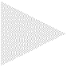

A little while later, adjusted to working for myself and with no shows possible, I began a process of reflection.

Some years ago I had made some small experiments with engraving on acrylic.

To start with I thought of these as little more than sketches, maquettes or models.

Perhaps with some new tech I could animate the forms or change the colours.

Individual pieces are small, typically no more than half a metre high.

Gradually a collection grew, they developed a stronger presence.

I assembled a display in my studio, bringing together pieces from 2015 with recent works.

My decision to look again at the acrylics was triggered by the frustration of not being able to do large shows, but their was another dynamic at play.

The designs were created in software I wrote originally for real time video animation.

I was beginning to become aware there was a lot more in the software than I first realised.

Many of the designs were made on flat pieces of material but they began to take on a three dimensional presence.
 I was learning new ways of working with the software I had written long ago.
I was learning new ways of working with the software I had written long ago.

The inspiration had been a 'virtual ripple tank', a student physics experiments once popular to demonstrate the principle of wave interference.

Free of the need to follow the laws of physics, I could tweak the mathematics to my artistic ends. 
At times errors produced strange zones that had a particular character.
 A series of images looked like aliens.
A series of images looked like aliens.

I added the suggestion of stars.

Perhaps there was a group trying to contact me?

With the prospect of a lasting end to lockdown and the chance for a show, I decided to start on larger works.  Some more than a metre wide or tall.
Some more than a metre wide or tall.


|  | |||
|
|
|
|